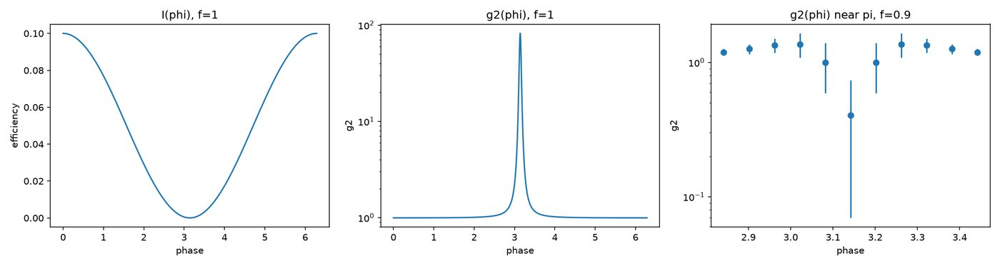
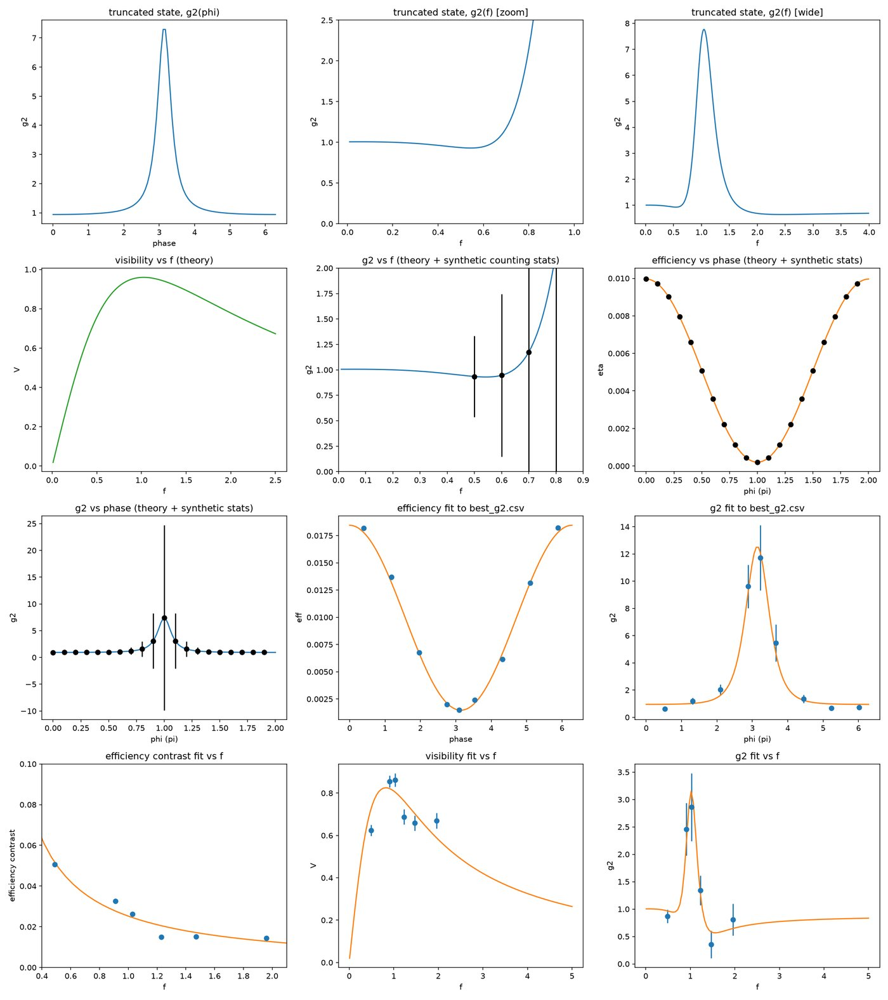
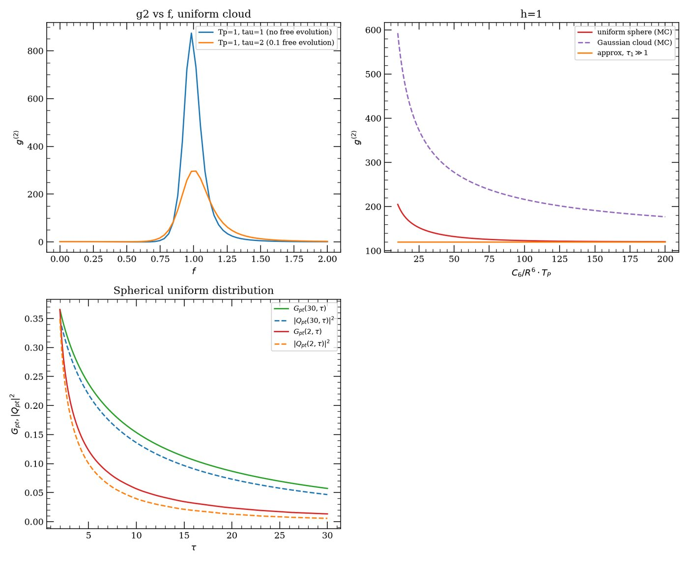
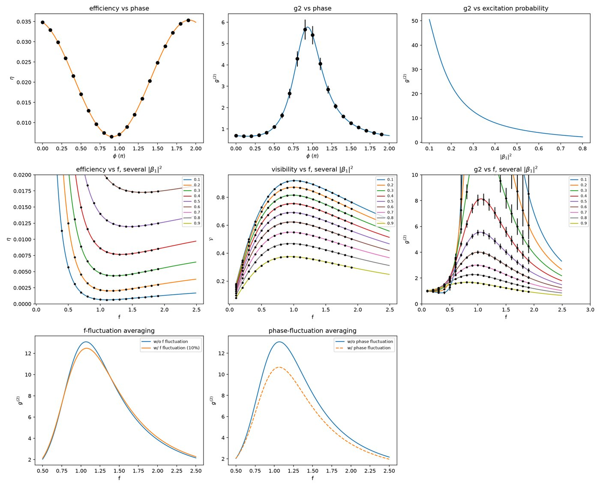

P. R. Berman, H. Nguyen, Y. Mei, Y. Li, A. Kuzmich
Mix the light retrieved from the atomic ensemble, EA, with a classical reference (probe) field EP of controllable phase φ, and look at the combined field’s second-order correlation g⁽²⁾(φ) instead of just its intensity. This is the general theory behind that measurement — it develops the g⁽²⁾(φ) formalism for two different atomic source states, then adds interaction-induced dephasing on top.
For a factorized state — every atom independently in its own superposition, no entanglement — the interference term is linear in the classical field amplitude, so at destructive interference (φ≈π) the mean intensity I(φ) is driven almost to zero while its fluctuations ⟨I²⟩ stay finite. Since g⁽²⁾ = ⟨I²⟩/I², that near-perfect cancellation of the mean produces a sharp super-bunching spike, visible only on a log scale.
The truncated multi-excitation state generalizes this to a source state with up to four excitations rather than a simple product state, adding higher-order terms that are fit directly against real experimental phase- and amplitude-scan data. Finally, interaction-induced dephasing — the same van der Waals mechanism as the two companion papers — is evaluated by Monte Carlo atom-position averaging for two cloud geometries, a uniform sphere and a Gaussian, showing how cloud shape sets the rate at which the interference signal washes out.




factorized_state_g2.py — factorized-state I(φ)/g⁽²⁾(φ); the log-scale super-bunching spiketruncated_state_fit.py — truncated-state g⁽²⁾ theory fit to real phase-scan data via curve_fitdephasing_g2.py — interaction-induced dephasing, Monte Carlo atom-position averaging (uniform/Gaussian)truncated_state_theory.py — truncated-state ξ/φ′ theory and shot-to-shot fluctuation averaging